11.1 Fundamental Principles of Geophysical Prospecting
Geophysical Prospecting is the indirect remote detection, delineation, and mapping of subsurface structures, mineral deposits, groundwater aquifers, and bedrock topography by measuring physical property contrasts at the Earth's surface. An anomalous deviation from the regional background field indicates a subsurface target:
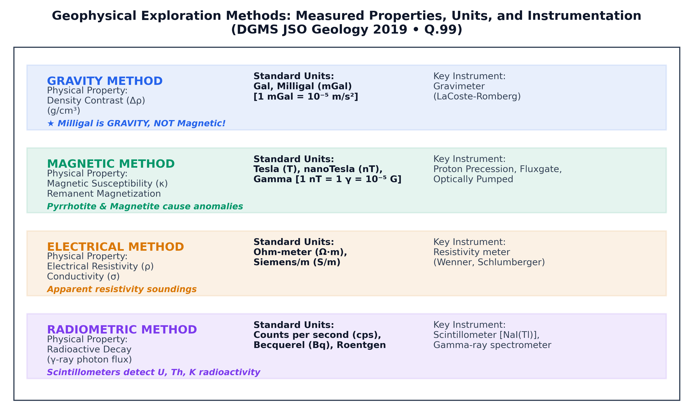
| Geophysical Method | Diagnostic Physical Property | Instrument Employed | Primary Civil & Mining Applications |
|---|---|---|---|
| Gravity | Mass density contrast ($\Delta \rho$) | Gravimeter (Worden, LaCoste-Romberg) | Chromite/sulfide bodies, salt domes, buried valleys, sedimentary basins. |
| Magnetic | Magnetic susceptibility ($k$) & remanence | Proton Precession Magnetometer (PPM), Fluxgate | Iron ore (BIF), basic igneous dikes, kimberlite pipes, fault delineation. |
| Electrical Resistivity | Electrical resistivity / conductivity ($\rho$) | Resistivity Meter, Wenner & Schlumberger arrays | Groundwater aquifers, depth to fresh bedrock, saline water intrusion, cavity detection. |
| Seismic Refraction | Compressional P-wave velocity ($V_p$) | Seismograph, Geophones, Sledgehammer / Explosive | Bedrock depth for dams, rock mass rippability, fault zones, tunnel overburden. |
| Radiometric | Radioactive decay ($\gamma$-ray emission: $\text{U, Th, K}$) | Geiger-Müller counter, Scintillation counter | Uranium-thorium ores, beach placer monazite mapping, lithological correlation. |
11.2 Electrical Resistivity Methods
The electrical resistivity method is the workhorse of engineering site investigations and hydrogeological prospecting. Electric current ($I$) is injected into the ground through two metal current electrodes ($A$ and $B$), and the resulting electrical potential difference ($\Delta V$) is measured between two intermediate potential electrodes ($M$ and $N$).

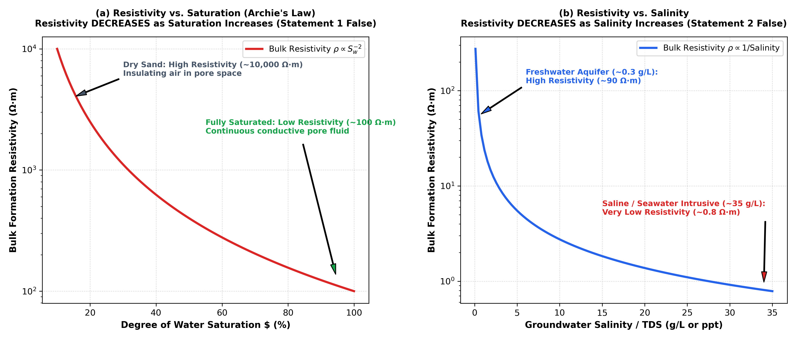
From Ohm's Law, the Apparent Resistivity ($\rho_a$) of the subsurface is given by:
$$\rho_a = K \cdot \frac{\Delta V}{I}$$Where $K$ is the Geometric Factor determined strictly by the spatial arrangement and spacing of the four electrodes:
$$K = \frac{2\pi}{\left(\frac{1}{AM} - \frac{1}{BM}\right) - \left(\frac{1}{AN} - \frac{1}{BN}\right)}$$1. The Wenner Electrode Configuration
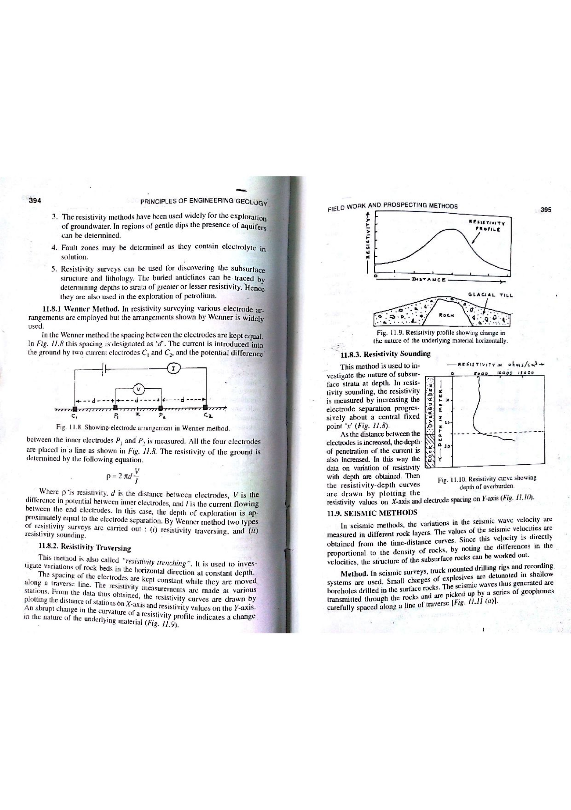
In the Wenner configuration, the electrodes are symmetrically and equally spaced:
$$AM = a, \quad AN = 2a, \quad BM = 2a, \quad BN = a$$Substituting into the geometric factor equation yields the celebrated Wenner apparent resistivity formula:
$$K = 2\pi a \implies \rho_a = 2\pi a \frac{\Delta V}{I}$$2. The Schlumberger Electrode Configuration
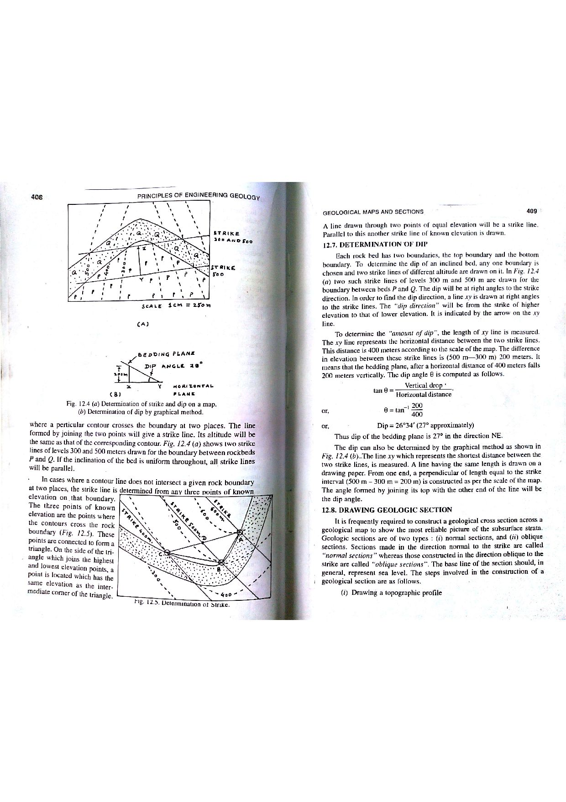
In the Schlumberger array, the potential electrodes $M$ and $N$ remain closely spaced at the center ($MN = 2l$), while only the outer current electrodes $A$ and $B$ are moved outward in steps ($AB = 2L$):
$$K = \frac{\pi (L^2 - l^2)}{2l} \approx \frac{\pi L^2}{2l} \implies \rho_a = \frac{\pi (L^2 - l^2)}{2l} \frac{\Delta V}{I}$$Operational Advantage: In field surveys, the Schlumberger array is vastly superior for deep Vertical Electrical Sounding (VES) because only two heavy current electrodes need to be moved for each reading, minimizing labor and cable dragging while eliminating near-surface potential electrode contact noise.
Field Survey Techniques
- Vertical Electrical Sounding (VES): Electrodes are progressively expanded outward about a fixed central point. The depth of current penetration increases with spacing ($d \approx \frac{AB}{3}\text{ to }\frac{AB}{4}$), providing a 1D vertical profile of layer thicknesses and resistivities (used to find aquifer depth and bedrock level).
- Constant Separation Profiling (Electrical Trenching): Electrode spacing ($a$) is held constant while the entire 4-electrode array is moved laterally along survey traverses. Maps horizontal resistivity variations to locate vertical fault zones, shear corridors, and mineralized quartz veins.
11.3 Seismic Refraction Method
The seismic refraction method utilizes elastic compression waves (P-waves) generated by a sledgehammer impact on a steel plate or a shallow explosive blast. Waves propagate downward, and upon striking an underlying layer with higher seismic velocity ($V_2 > V_1$, e.g., solid granite bedrock beneath loose alluvium), they refract according to Snell's Law:

When the angle of incidence equals the Critical Angle ($i_c$), the refracted wave travels along the interface boundary at velocity $V_2$ as a "head wave", continuously transmitting energy back to surface geophones at angle $i_c$:
$$\sin i_c = \frac{V_1}{V_2}$$Interpretation of Time-Distance ($t\text{--}x$) Graph
A plot of first-arrival travel time ($t$) against source-geophone offset distance ($x$) produces two straight-line segments:
- Direct Wave (Slope $1/V_1$): Passes through origin: $t = \frac{x}{V_1}$.
- Refracted Head Wave (Slope $1/V_2$): Arrives after intercept time $t_i$: $t = \frac{x}{V_2} + t_i$.
The depth to bedrock ($h$) is calculated directly from the intercept time ($t_i$) or the crossover distance ($x_c$ where direct and refracted waves arrive simultaneously):
$$h = \frac{t_i}{2} \frac{V_1 V_2}{\sqrt{V_2^2 - V_1^2}} = \frac{x_c}{2} \sqrt{\frac{V_2 - V_1}{V_2 + V_1}}$$| Geological Material | Typical P-Wave Velocity $V_p$ (m/s) | Rippability Assessment (Caterpillar Scale) |
|---|---|---|
| Loose Topsoil / Sand | $300\text{--}800$ | Easily ripped / scrapable |
| Wet Alluvium / Clay | $1000\text{--}1800$ | Easily excavated with backhoe |
| Weathered Sandstone / Shale | $1800\text{--}2500$ | Marginally rippable with D9 bulldozer |
| Sound Limestone / Dolerite | $3500\text{--}5500$ | Non-rippable; requires blasting |
| Massive Fresh Granite / Basalt | $5000\text{--}6200$ | Extremely hard; full drill-and-blast required |
11.4 Gravity and Magnetic Prospecting
Gravity Method
Measures tiny variations in Earth's gravitational acceleration (expressed in milligals: $1\text{ mgal} = 10^{-3}\text{ cm/s}^2 = 10^{-5}\text{ m/s}^2$). Raw field gravity measurements are reduced to the Bouguer Anomaly by applying:
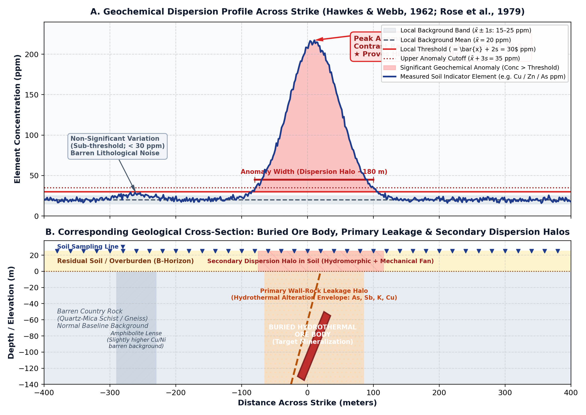
- Latitude Correction: Accounts for Earth's centrifugal flattening.
- Free-Air Correction: Elevational change without mass ($\Delta g_F = +0.3086 \, h\text{ mgal}$).
- Bouguer Slab Correction: Mass of rock slab between station and datum ($\Delta g_B = -2\pi G \rho h = -0.04192 \, \rho h\text{ mgal}$).
- Terrain Correction: Surrounding hill and valley relief (always positive).
Magnetic Method
Measures variations in the total geomagnetic field intensity (in nanoteslas, $\text{nT}$). Highly magnetized rocks containing magnetite produce intense dipolar anomalies. Widely used for airborne reconnaissance surveys across prospective mineral belts.
11.5 Visual Atlas: Hydrogeophysical Logging, Aquifer Pumping Tests & Water Quality
Field hydrogeology and geophysical interpretation charts covering Cooper-Jacob drawdown analysis, residual recovery tests, and EC-to-TDS conversions.
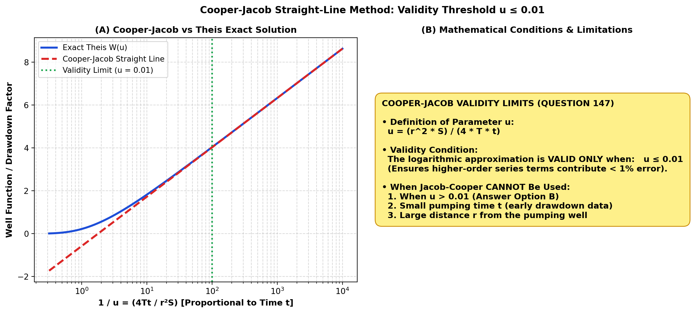
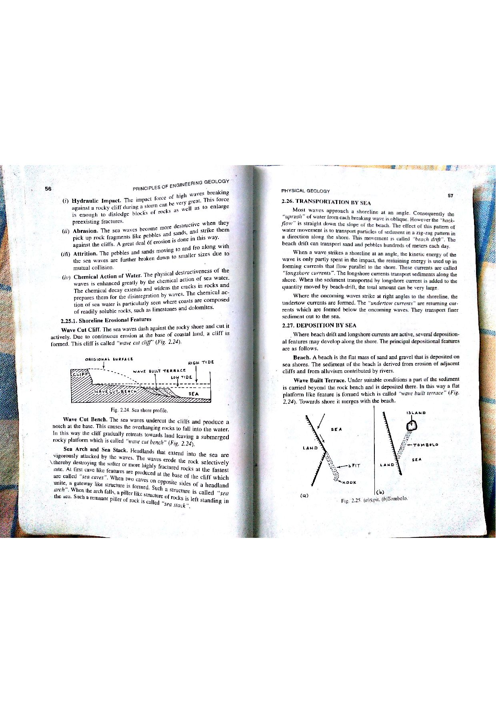
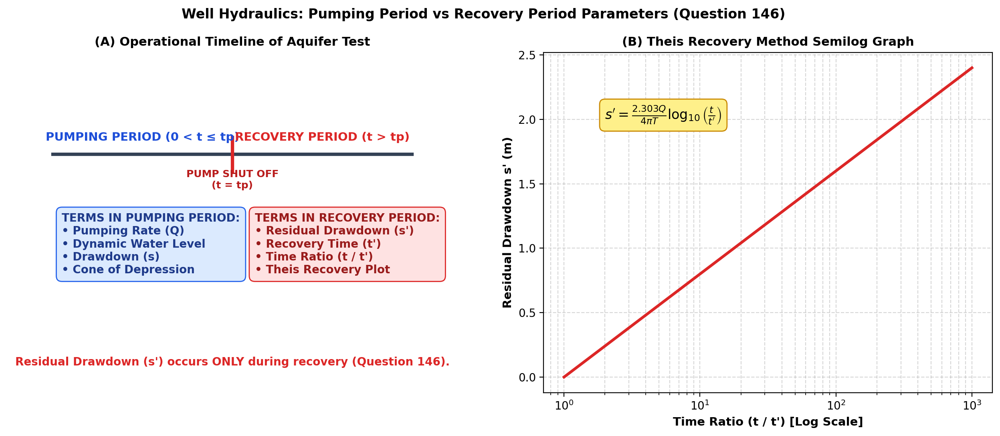
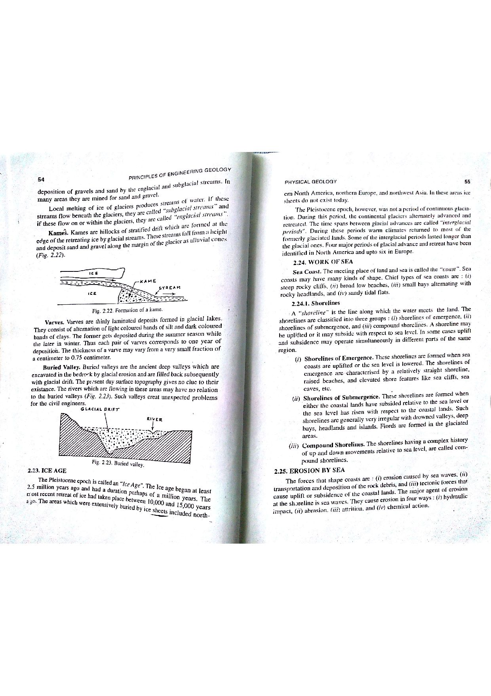

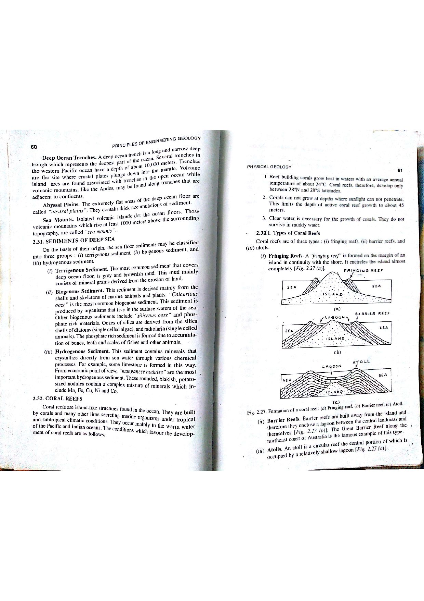
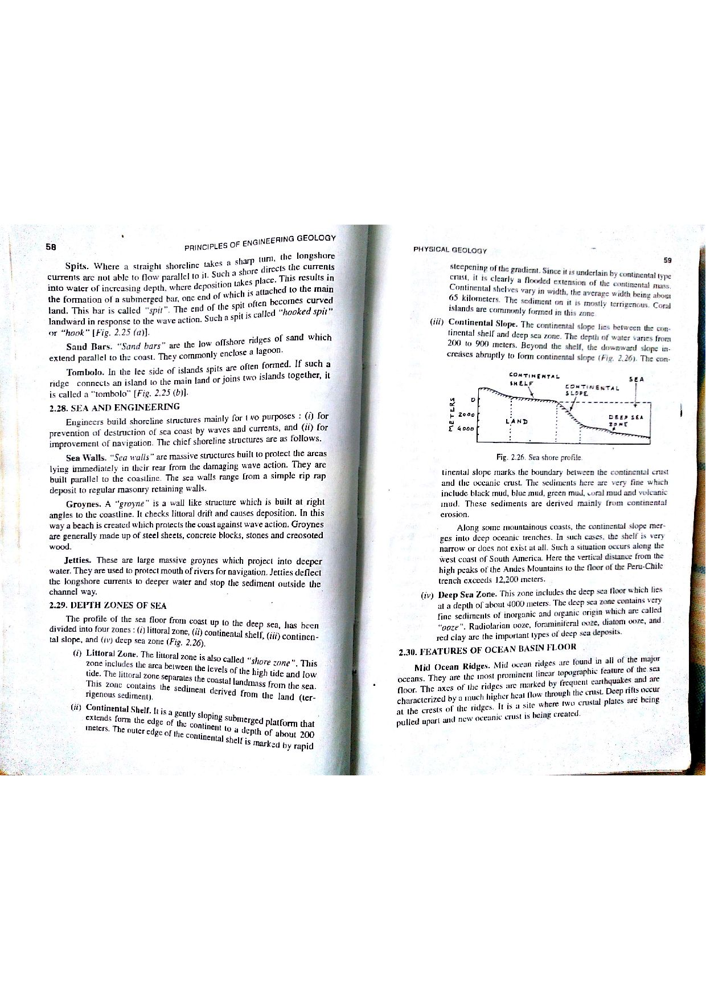
- Dam Foundations: Seismic refraction maps continuous bedrock depth and pinpoints hidden buried river channels that would cause catastrophic piping leakage under dam embankments.
- Groundwater Supply: Schlumberger VES curves differentiate between saline groundwater ($\rho < 5\;\Omega\cdot\text{m}$), clay-rich aquitards ($\rho = 10\text{--}30\;\Omega\cdot\text{m}$), and fresh gravel/sand aquifers ($\rho = 50\text{--}150\;\Omega\cdot\text{m}$).
- Tunnel Overburden: Resistivity profiling detects water-bearing sheared fault zones hundreds of meters ahead of tunnel boring machines (TBMs), preventing tunnel flooding disasters.